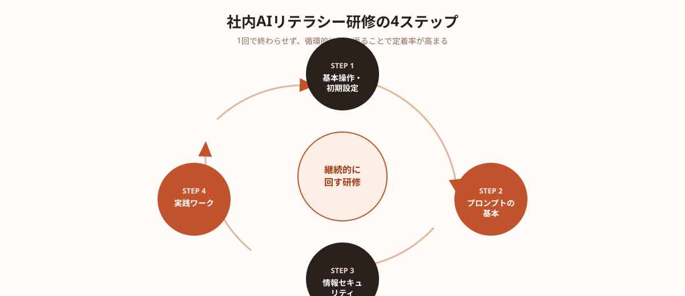
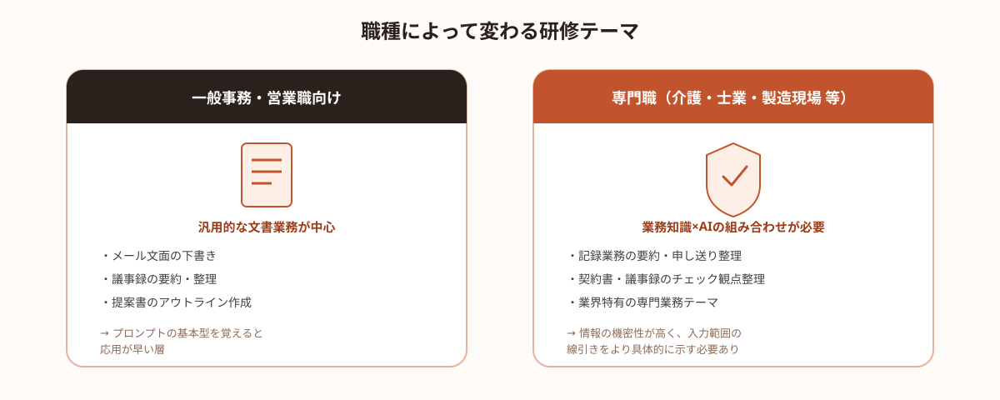

「ChatGPTやClaudeを導入したものの、結局使っているのは情報システム部門の数人だけ」——2026年に入り、多くの企業からこうした声を耳にするようになりました。ツール導入自体は数クリックで完了しますが、現場の社員が実際に使いこなせるようになるかどうかは、研修設計にかかっていると言っても過言ではありません。
この記事では、社内でAIリテラシー研修を企画する際に整理すべきポイントと、研修で教えるべき4つの基本ステップ、業種・職種によって内容をどう変えるべきかを解説します。
「AIツールを導入したのに使われない」のはなぜか
AIツールの社内導入が「PoC止まり」「一部の人だけが使う」状態で終わってしまう企業には、いくつか共通点があります。多いのは、ツールのアカウントを配布しただけで、使い方を体系的に教える機会を作っていないケースです。
ChatGPTやClaudeは直感的に使えるツールではありますが、「何を聞けば業務が楽になるのか」「どこまで社内情報を入力していいのか」が分からないまま使い始めると、多くの社員は数回試したきりで離脱してしまいます。逆に言えば、最初の研修設計を丁寧に行うことが、AI活用が現場に定着するかどうかの分岐点になります。
研修設計の前に整理すべき3つのこと
研修の内容を考える前に、次の3点を整理しておくと、的外れな研修になることを防げます。
①研修の目的を明確にする
「AIに触れたことがない社員のリテラシー向上」と「すでに使っている社員の応用力強化」では、研修内容が大きく変わります。誰のどんな状態を変えたいのかを最初に決めましょう。
②対象者のレベルを分ける
全社員を一度に同じ研修に集めると、初心者には早すぎて、経験者には物足りない内容になりがちです。「未経験者」「基本操作はできる」「業務で使い始めている」の3段階程度に分けて設計するのが現実的です。
③対象ツールを決める
ChatGPT・Claude・Gemini のどれを主に使うのか、複数ツールを並行運用するのかを決めておきます。研修中に画面操作を見せる以上、対象ツールが定まっていないと教材が作れません。
この3点が固まっていれば、研修の時間配分や教材のボリュームを具体的に決めやすくなります。
研修で教えるべき4つの基本ステップ
AIリテラシー研修の内容は、業種や対象者によって細部は変わりますが、骨格となる4つのステップは共通しています。

- ステップ1｜基本操作・初期設定（アカウント作成、画面の基本操作、社内ルールの確認）
- ステップ2｜プロンプトの書き方の基本（目的・前提条件・出力形式を伝える型を覚える）
- ステップ3｜情報セキュリティ・社内ルール（入力してよい情報の範囲、機密情報の扱い）
- ステップ4｜業務テーマ別の実践ワーク（自分の業務に当てはめて実際に使ってみる）
特に重要なのはステップ3とステップ4です。セキュリティ教育を省略すると、後から「入力していい情報の範囲」をめぐる社内トラブルにつながりやすく、実践ワークを省略すると「研修では分かったが、自分の業務にどう使うか分からない」という状態のまま終わってしまいます。
ステップ4の実践ワークでは、参加者自身の日常業務（メール作成、議事録整理、資料の下書きなど）を題材にすることで、研修後の活用率が大きく変わります。汎用的な例題だけで終わらせず、「自分ごと化」できる課題を必ず1つ以上含めることをおすすめします。
業種・職種によって変えるべき研修内容
研修の骨格は共通していても、業種・職種によって「教えるべき実践テーマ」と「セキュリティ上の注意点」は大きく異なります。

一般事務・営業職向けの研修では、メール文面の下書き、議事録の要約、提案書のアウトライン作成など、汎用的な文書業務を題材にしたワークが中心になります。プロンプトの基本型を覚えれば、比較的早く業務への応用が進みやすい層です。
一方、介護・士業・製造現場など専門性の高い職種では、業務知識とAIの組み合わせ方を教える必要があります。たとえば介護現場であれば記録業務の要約・申し送り文の整理、士業であれば契約書・議事録のチェック観点の整理など、「その業界特有の業務」に即した実践テーマを用意することで、研修の納得感が大きく変わります。また、専門職ほど扱う情報の機密性が高いケースが多く、入力してよい情報の境界線をより具体的に示す必要があります。
全社員に同一の教材を配るのではなく、職種ごとに実践ワークの題材だけを差し替える、という設計が現実的かつ効果的です。
研修後に「使われ続ける」ための定着の工夫
研修は一度実施しただけでは定着しません。実施後に効果が薄れてしまう企業の多くは、「研修して終わり」になってしまい、フォローの仕組みがないという共通点があります。
定着率を高めるためには、次のような工夫が有効です。
- 社内Q&Aチャンネルの設置：質問や活用例を投稿できる場を作り、研修後の疑問をその場で解消できるようにする
- プロンプト集の社内共有：研修で作ったプロンプトをテンプレート化し、誰でも使い回せる状態にしておく
- 1ヶ月後の振り返り会：研修直後ではなく、実際に使ってみてからの疑問・困りごとを共有する機会を設ける
- 活用事例の社内発信：実際に業務時間を削減できた事例を紹介し、他の社員の活用意欲を高める
💡 定着のコツ
研修を1回のイベントとして終わらせず、「研修＋フォロー」を1つのセットとして設計することが、AI活用が一部の人だけの取り組みで終わらないための最大のポイントです。
研修担当者を社内に立てられない場合の選択肢
ここまで紹介した内容を実行しようとすると、「カリキュラムを作る人材がいない」「教材作成に時間が取れない」という壁にぶつかる企業も少なくありません。特に情報システム部門が小規模、あるいは専任者がいない中小企業では、研修設計そのものが後回しになりがちです。
このような場合、社内に研修担当者を新たに採用するのではなく、カリキュラム設計や教材作成だけをスポットで外部に依頼するという選択肢があります。AIツールの活用に詳しいエンジニアやAI活用支援者に、自社の業務に合わせた実践ワークの設計だけを切り出して依頼することで、固定費をかけずに研修の質を高めることができます。
🔧 「研修教材だけ作ってほしい」企業様へ
ANKENでは、業種別の実践ワーク設計やプロンプトテンプレート作成など、AIリテラシー研修の一部だけを切り出してスポットで依頼することも可能です。固定費ゼロ・週末対応のエンジニアとマッチングできます。
まとめ・ANKENへのご相談
AIツールを「導入しただけ」で終わらせず、現場で使われ続ける状態にするには、目的・対象者レベル・対象ツールを整理した上で、基本操作からセキュリティ、実践ワークまでを段階的に教える研修設計が欠かせません。業種・職種に応じて実践テーマを差し替え、研修後のフォローまでセットで設計することが、定着の分かれ道になります。
ANKENでは、研修カリキュラムの設計支援から、AIを活用した社内ツール開発まで、固定費ゼロ・週末スポットからのご相談に対応しています。
研修教材の設計から、ChatGPT・Claude APIを使った社内ツール開発まで、固定費ゼロ・週末スポットから依頼可能です。
👉 無料でスポット依頼を相談する初回相談は無料です。要件が固まっていなくてもOKです。